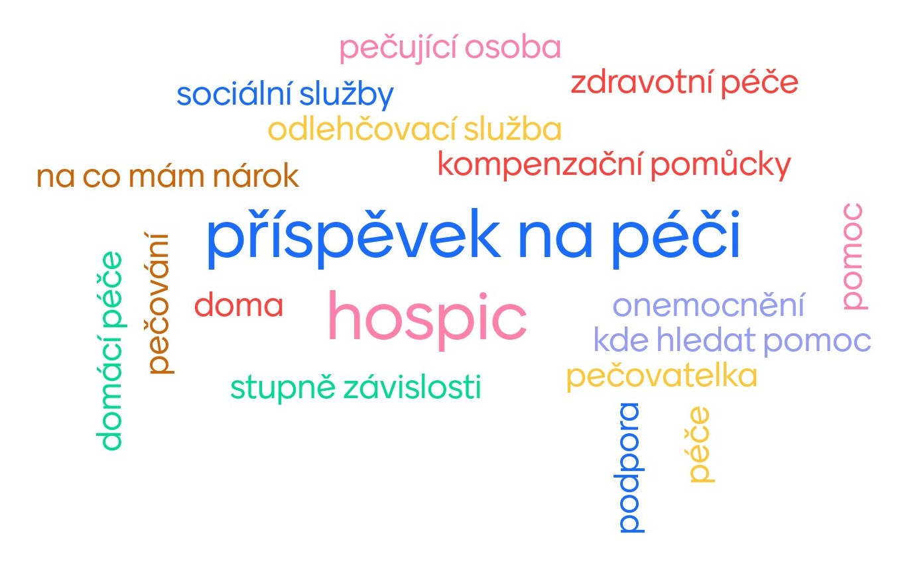

Spolu to zvládneme, nebojme se těchto pojmů!

PROČ?
Každému se to může stát - někdo v rodině onemocní a velmi rychle je
třeba zařídit spoustu věcí, třeba:
-
pečovatelku nebo ošetřovatelku, která pomůže, když rodina nestíhá
-
invalidní vozík nebo polohovací postel, zkrátka pomůcky, které
běžně nepotřebujeme
- peníze na to, aby se někdo mohl o nemocného starat
KOMU A CO?
Lidem, kteří nemají zkušenosti (což je většina z nás) chceme
poskytnout informaci o tom :
- jaké služby jsou v jejich okolí k dispozici
-
pomocí mapy jim napovědět, na koho se můžou obrátit v jejich
městě/vesnici
- jak zažádat o příspěvky, které jim pomůžou péči financovat
JAK?
Internet je plný sáhodlouhých seznamů služeb a organizací. Náš web
bude konkrétní a interaktivně umožní:
-
vyfiltrovat potřebné informace podle místa nebo podle druhu služby
- jednoduše navigovat ke kontaktům na poskytovatelům služeb
- propojit služby s možnou finanční pomocí